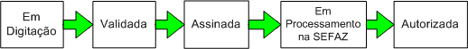

Fluxo
básico de situações da NF-e Durante
a emissão de
uma Nota Fiscal eletrônica, esta passa por diversas
situações até ser autorizada pela
Secretaria de
Fazenda Estadual.
Em resumo a NF-e assume as seguintes situações
até a sua autorização:

1.
Em Digitação
A NF-e que acaba de ser criada e ainda não completamente
finalizada com os dados.
Pode ser editada a qualquer hora e ainda não apresenta
validade.
2.
Validada
Apenas após a
inserção de todas as
informações
necessárias da NF-e e a realização da
operação de Validação a
NF-e ficará
Validada.
Nesta situação, a NF-e encontra-se corretamente
preenchida com relação a estrutura de dados.
Caso a NF-e seja editada, esta deverá passar novamente pelo
processo de validação.
Ainda
não apresenta validade. IMPORTANTE: O
processo de validação da estrutura das
informações NÃO garante a
consistência
tributária dos dados.
3.
Assinada
É
a
situação ao qual a NF-e está
após
ser assinada digitalmente com o Certificado Digital do
contribuinte emissor.
Ainda é possível a edição
desta NF-e, mas
esta voltará para a situação
"Em
Digitação", perdendo a assinatura e sendo
necessário realizar novamente os processos de
Validação e Assinatura.
Ainda
não apresenta validade.
4. Em Processamento na SEFAZ
Após
a
transmissão da NF-e para a SEFAZ correspondente, a NF-e
ganhará a situação "Em processamento
na SEFAZ".
Neste estágio, a NF-e estará na fila
para ser
processada na SEFAZ, tendo o usuário que aguardar
até que
a SEFAZ recepcione e autorize a respectiva NF-e.
Durante este momento, o Software fará a busca das
autorizaões das NF-e's enviadas, informando quando a NF-e
for
autorizada.
Como a NF-e ainda está em processamento, ainda
não apresenta validade.
5. Autorizada
É
o estágio na
qual a NF-e foi recepcionada e autorizada pela SEFAZ, podendo o
contribuinte realizar a impressão do DANF-e e a
circulação da mercadoria.
A NF-e já apresenta validade jurídica, mas os
dados nela
contidos são de responsabilidade do contribuinte emissor.
Outras
situações para a NF-e
Além
das
situações da NF-e até ser autorizada
pela SEFAZ, a
NF-e poderá encontrar-se em outros estágios
diferentes do
ciclo básico da autorização.
São eles:
1.
Cancelada
Após ser autorizada pela SEFAZ, o contribuinte
poderá solicitar o cancelamento da NF-e, caso haja necessidade.
Neste caso, o contribuinte deverá também
justificar o pedido de cancelamento.
Depois de enviada a solicitação de cancelamento,
e esta
sendo homologada pela SEFAZ, a NF-e mudará de
situação para Cancelada, não sendo
possível
mais a sua utilização ou a impressão
do respectivo
DANF-e. IMPORTANTE:
A exclusão da NF-e pelo sistema
(opção Excluir NF-e) não
implica no
cancelamento da NF-e na SEFAZ.
2. Denegada
Condição que
ocorre quando a NF-e é enviada para a SEFAZ e durante o
processamento da nota no sistema da Fazenda verifica-se que o
emitente ou o destinatário ou ambos estão em
situação de pendência perante o Fisco.
Neste caso, não será permitida a
impressão do DANF-e.
Também não é possível o
cancelamendo de NF-e denegada.
3.
Rejeitada
Após
o envio e
processamento da NF-e na SEFAZ, a nota poderá ser
rejeitada
caso haja alguma pendência ou problema com a NF-e.
Neste caso, o sistema da SEFAZ não autorizará a
NF-e, disponibilizando o motivo da rejeição.
Na busca pelas autorizações na SEFAZ, caso
Software
encontre algum problema de rejeição, a respectiva
NF-e
com problemas ficará com a situação
igual a
rejeitada.
Neste caso, após verificar a pendência
ocorrida, o
usuário poderá novamente editar a NF-e (a
voltará
para a situação Em
Digitação) para realizar
a correção e, após a
validação e a
assinatura, retransmitir para a SEFAZ.
4. Com
problemas na transmissão/Em
pendência de retorno Caso
especial de NF-e.
Ocorre quando houve algum problema com a transmissão da NF-e
para a SEFAZ (ou seja, não é conhecido se a NF-e
foi
enviada com sucesso para a SEFAZ) ou quando houve algum problema com a
busca pelo retorno de autorizações da SEFAZ.
Nestes casos, o usuário, através da opção de Consulta Situação na SEFAZ, deverá realizar a busca das
autorizações destas NF-e's na SEFAZ. Caso a NF-e
encontre-se autorizada na SEFAZ, o Software irá
automaticamente
mudar a situação da NF-e para Autorizada.
Fluxo
completo de situações possíveis para a
NF-e no Software Emissor NF-e